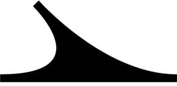

Trade Mark Journal No.2025/041 10 October 2025
UK00004270039 26 September 2025 (9,41,42,45)

International priority date claimed: 17 September 2025
(United States of America)
(99396825)
- Class 9
- Downloadable computer software development tools; downloadable cloud-based software for artificial intelligence, technology, computing, cyber-security, national security, information security, software development, software implementation, software as a service (SaaS), and platform as a service (PaaS); downloadable computer software for artificial intelligence, technology, computing, cyber-security, national security, information security, software development, software implementation, software as a service (SaaS), and platform as a service (PaaS); downloadable computer software development tools.
- Class 41
- Workshops and seminars in the field of cyber security, network security, and computer security.
- Class 42
- Providing temporary use of on-line non-downloadable software development tools; software as a service (SaaS) services featuring software in the field of computer and network security; computer services, namely, online scanning, detecting, quarantining, and eliminating viruses, worms, trojans, spyware, adware, malware and unauthorized data and programs on computers, networks, and electronic devices; implementing plans for improving computer and network security, namely, identifying malware on computer systems, identification the source and genealogy of malware, and identifying the objectives of computer system attackers; monitoring of computer systems for security purposes, namely, for detecting and preventing unauthorized access, data breaches, security violations, phishing attacks, ransomware, security vulnerabilities, and malware; provision of systems for the management of computer and network threats, namely, surveillance and monitoring of vulnerability and security problems in computer hardware, networks, and software; implementing plans for improving computer and network security, namely, computer security assurance; computer programming consultancy in the field of artificial intelligence, technology, computing, cybersecurity, national security, information security, software development, software implementation; consultancy in the field of artificial intelligence (ai) technology; technology consultation in the field of artificial intelligence (ai); consultation about the maintenance and updating of computer software; consulting in the field of it project management; consulting in the field of telecommunications technology; consulting in the field of engineering; consulting services for others in the field of design, planning, and implementation project management of artificial intelligence, technology, computing, cybersecurity, national security, information security, software development, software implementation, software as a service (SaaS), and platform as a service (PaaS); consulting in the field of artificial intelligence, technology, computing, cybersecurity, national security, information security, software development, software implementation, software as a service (SaaS), and platform as a service (PaaS) engineering; consulting services in the field of cloud computing; consulting services in the field of design, selection, implementation and use of computer hardware and software systems for others; consulting services in the field of genetic science; computer programming consultancy; computer programming consultancy in the field of artificial intelligence, technology, computing, cybersecurity, national security, information security, software development, software implementation, software as a service (SaaS), and platform as a service (PaaS); computer security consultancy; computer software consultancy; computer software consulting; computer technology consultancy; consulting services in the field of software as a service (SaaS); data security consultancy; information technology consulting relating to computer network design; information technology consulting relating to computer software design; internet security consultancy; outsource service provider in the field of information technology consulting relating to installation, maintenance and repair of computer software; product development consultation; product development consulting in the field of artificial intelligence, technology, computing, cyber-security, national security, information security, software development, software implementation, software as a service (SaaS), and platform as a service (PaaS); providing temporary use of on-line non-downloadable software development tools; software as a service (SaaS) services featuring software for computer and network security; computer services, namely, on-line scanning, detecting, quarantining and eliminating of viruses, worms, trojans, spyware, adware, malware and unauthorized data and programs on computers and electronic devices; monitoring of computer systems for detecting unauthorized access or data breach; implementing plans for improving computer and network security, namely, identifying malware on computer systems, identification the source and genealogy of malware, and identifying the objectives of computer system attackers.
- Class 45
- Monitoring of computer systems for security purposes, namely, for detecting and preventing unauthorized access, data breaches, security violations, phishing attacks, ransomware, security vulnerabilities, and malware; provision of systems for the management of computer and network threats, namely, surveillance and monitoring of vulnerability and security problems in computer hardware, networks, and software; implementing plans for improving computer and network security, namely, computer security assurance.
Pattern Labs Tech Inc.
Representative: Abion UK Limited